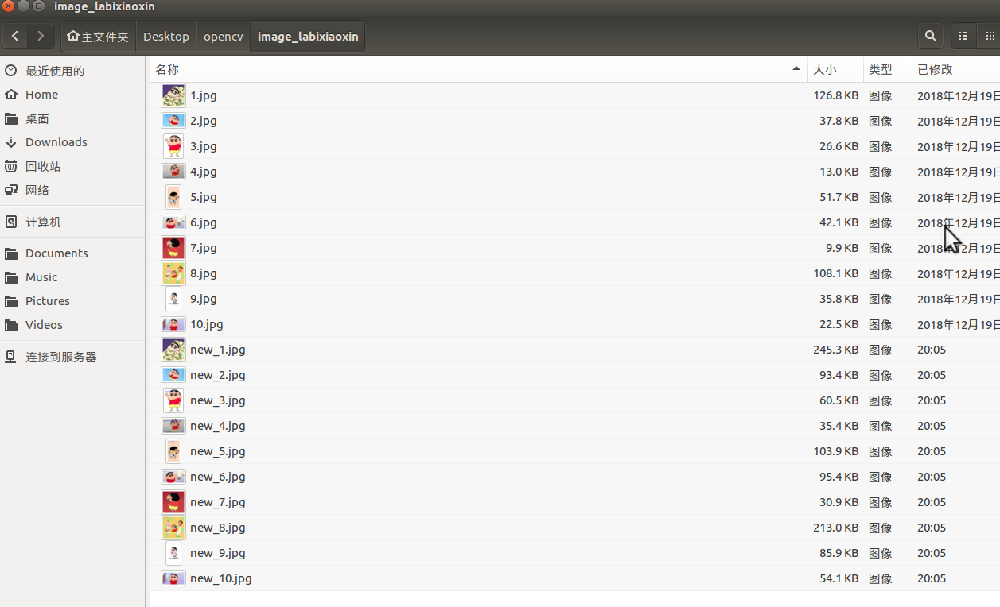
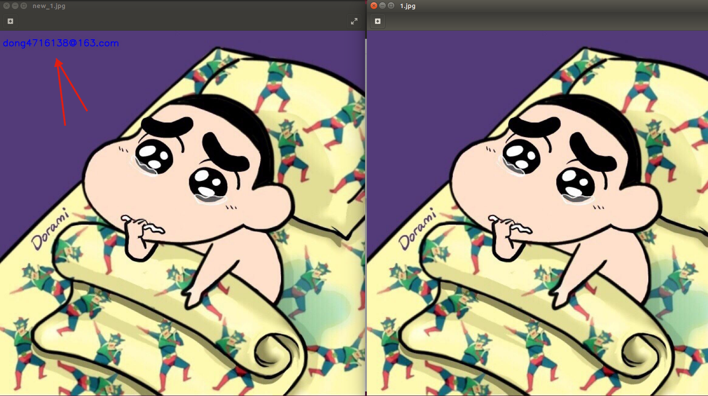

案例：图片添加水印
#coding=utf-8
import cv2
import os
# 1. 获取需要批量添加水印的文件夹的名字
folder_name = raw_input("请输入要批量添 加水印的文件的名字：")
# 2. 获取文件中所有文件的名字
file_names = os.listdir(folder_name)
# 3. 使用cv2进行处理
for name in file_names:
img = cv2.imread(folder_name + "/" + name)
font = cv2.FONT_HERSHEY_SIMPLEX # 字体类型
# 参数是OpenCV 输入文本数据，放置文本的位置坐标，字体类型，字体大小，颜色为白色，厚度为2
cv2.putText(img, 'dong4716138@163.com', (10, 50), font, 1, (255, 0, 0), 2)
cv2.imwrite(folder_name + "/new_" + name, img)
效果如下：

